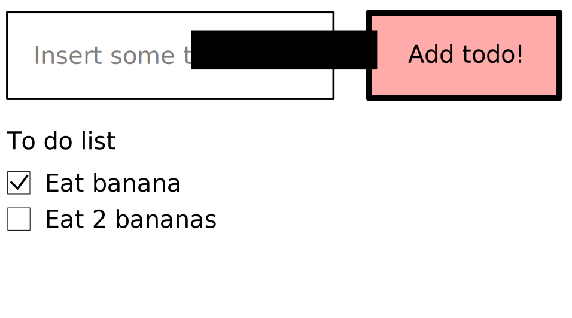
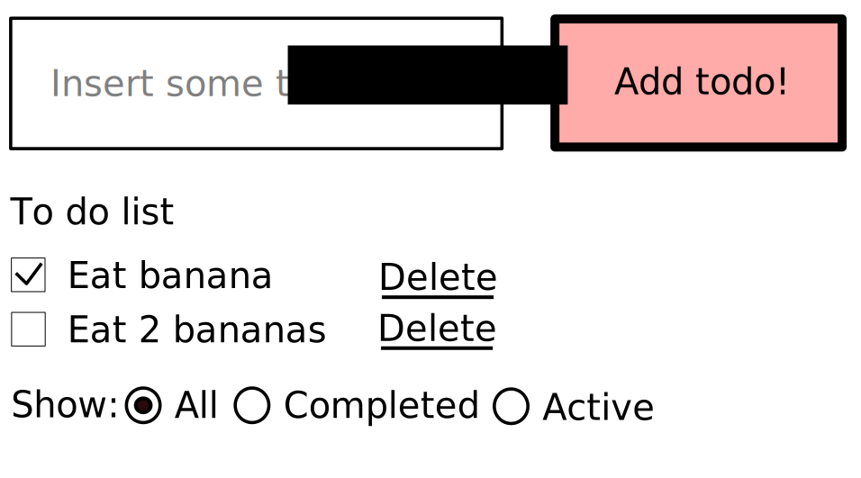

Why Flux?

In a kingdom rich of async calls and complexity, only the right hero can bring peace and scalability.
Flux can be the right choice, but there are hundreds implementations and we must choose the right one.



Not properly a Flux implementation, but can be Flux with the right boilerplate

{ type: 'ADD_TODO', data: actionData }
{ type: 'ADD_TODO', payload: actionData, meta: actionMeta }, { type: 'ADD_TODO', payload: new Error(), error: true }
const addTodo = (todo) => { dispatch({ type: 'ADD_TODO', payload: todo }); };
const addTodo = (todo) => { saveToDoWebApi(todo) .then((todo) => { dispatch({ type: 'ADD_TODO', payload: todo }); }) .catch(() => { dispatch({ type: 'ADD_TODO', payload: new Error('damn'), error: true }); }); };
const addTodo = (todo) => { dispatch({ type: 'ADD_TODO', payload: todo }); saveToDoWebApi(todo) .catch(() => { dispatch({ type: 'REMOVE_TODO', payload: todo }); }); };
const addTodo = (todo) => ({ type: 'ADD_TODO', payload: todo }); dispatch(addTodo(myPrettyTodo));
const addTodo = (todo) => ({ type: 'ADD_TODO', payload: saveToDoWebApi(todo) }); resolvePromise(dispatch, addTodo(myPrettyTodo));
The Firefox debugger written with Redux